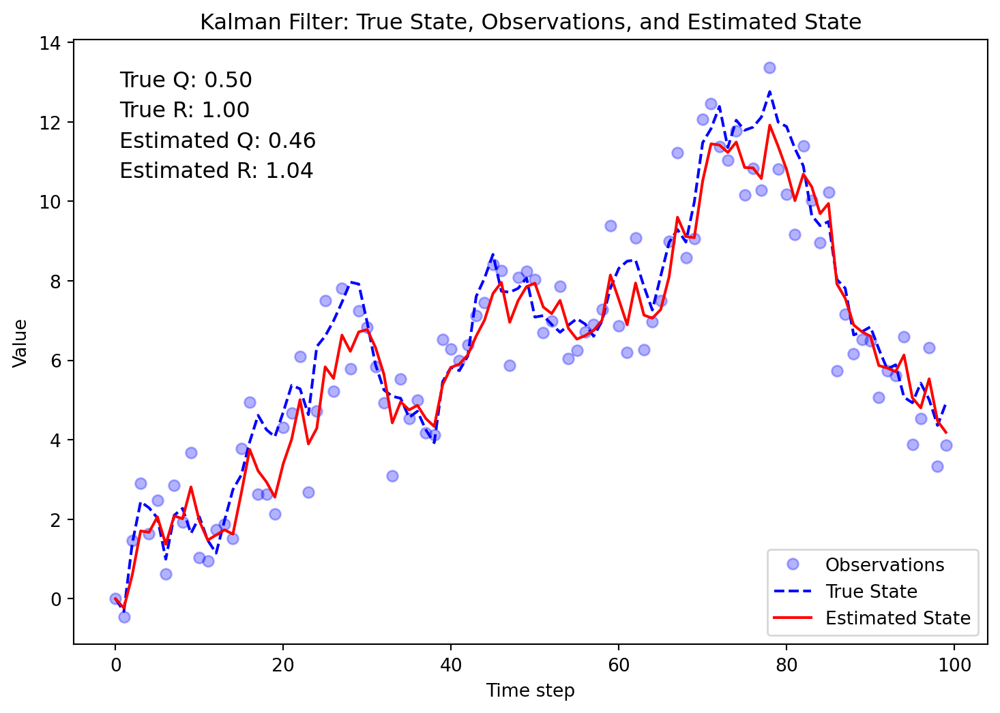

![]()
import numpy as np
import matplotlib.pyplot as plt
from numpy.linalg import det, inv
from scipy.optimize import minimize
rng = np.random.default_rng(1024)
# Simulate data
dim_x = 1 # Number of unobservable true states
dim_z = 1 # Dimension of observations
n_steps = 100 # Number of time steps
F = np.array([[1.0]]) # State transition
H = np.array([[1.0]]) # Observation model
Q = np.array([[0.5]]) # Process noise covariance
R = np.array([[1.0]]) # Measurement noise covariance
# Generate true states and noisy observations
X = np.zeros((dim_x, n_steps))
Z = np.zeros((dim_z, n_steps))
for t in range(1, n_steps):
X[:,t] = F @ X[:,t-1] + rng.multivariate_normal(np.zeros(dim_x), Q)
Z[:,t] = H @ X[:,t] + rng.multivariate_normal(np.zeros(dim_z), R)
# Define the Kalman filter functions
def kalman_predict(x, P, F, Q):
x_pred = F @ x
P_pred = F @ P @ F.T + Q
return x_pred, P_pred
def kalman_update(x_pred, P_pred, z, H, R):
S = H @ P_pred @ H.T + R
K = P_pred @ H.T @ inv(S)
x_upd = x_pred + K @ (z - H @ x_pred)
P_upd = (np.eye(len(P_pred)) - K @ H) @ P_pred
return x_upd, P_upd, S
def run_kalman_filter(Q, R, F, H, x0, P0, Z):
Q = np.array([[Q]]) # Process noise covariance
R = np.array([[R]]) # Measurement noise covariance
x, P = x0, P0
log_likelihood = 0
log_2pi = np.log(2 * np.pi)
for z in Z[0,:]:
x_pred, P_pred = kalman_predict(x, P, F, Q)
x, P, S = kalman_update(x_pred, P_pred, z, H, R)
innovation = z - H @ x_pred
l = -0.5 * (dim_z * log_2pi + np.log(det(S)) + innovation.T @ inv(S) @ innovation)
log_likelihood += l
return -log_likelihood # Negative log-likelihood to minimize
# Define objective function for parameter estimation
def objective(params, F, H, x, P, Z):
Q, R = params
return run_kalman_filter(Q, R, F, H, x, P, Z)
# Initial guess for the parameters: [Q, R]
initial_params = [0.1, 0.1]
x0 = np.array([[0]]) # Initial state estimate
P0 = np.array([[1]]) # Initial covariance
# Minimize the log-likelihood with bounds to ensure Q and R are positive
result = minimize(
objective,
initial_params,
args=(F, H, x0, P0, Z,),
method='L-BFGS-B',
bounds=[(1e-5, None), (1e-5, None)]
)
estimated_Q, estimated_R = result.x
# Run the Kalman filter with the estimated parameters
estimated_Q = np.array([[estimated_Q]])
estimated_R = np.array([[estimated_R]])
x_est = np.zeros((dim_x, n_steps))
P_est = np.zeros((dim_x, dim_x, n_steps))
x, P = x0, P0
for t in range(n_steps):
x_pred, P_pred = kalman_predict(x, P, F, estimated_Q)
x, P, _ = kalman_update(x_pred, P_pred, Z[:,t], H, estimated_R)
x_est[:,t] = x
P_est[:,:,t] = P
# Plot the true states and estimates
plt.figure(figsize=(9, 6))
plt.plot(Z[0], 'o', label='Observations', color='b', alpha=0.3)
plt.plot(X[0], label='True State', color='b', linestyle='dashed')
plt.plot(x_est[0], label='Estimated State', color='r')
plt.xlabel('Time step')
plt.ylabel('Value')
plt.legend()
plt.title('Kalman Filter: True State, Observations, and Estimated State')
plt.annotate(f'True Q: {Q[0,0]:.2f}', xy=(0.05, 0.95), xycoords='axes fraction', fontsize=12, verticalalignment='top')
plt.annotate(f'True R: {R[0,0]:.2f}', xy=(0.05, 0.90), xycoords='axes fraction', fontsize=12, verticalalignment='top')
plt.annotate(f'Estimated Q: {estimated_Q[0,0]:.2f}', xy=(0.05, 0.85), xycoords='axes fraction', fontsize=12, verticalalignment='top')
plt.annotate(f'Estimated R: {estimated_R[0,0]:.2f}', xy=(0.05, 0.80), xycoords='axes fraction', fontsize=12, verticalalignment='top')
plt.show()